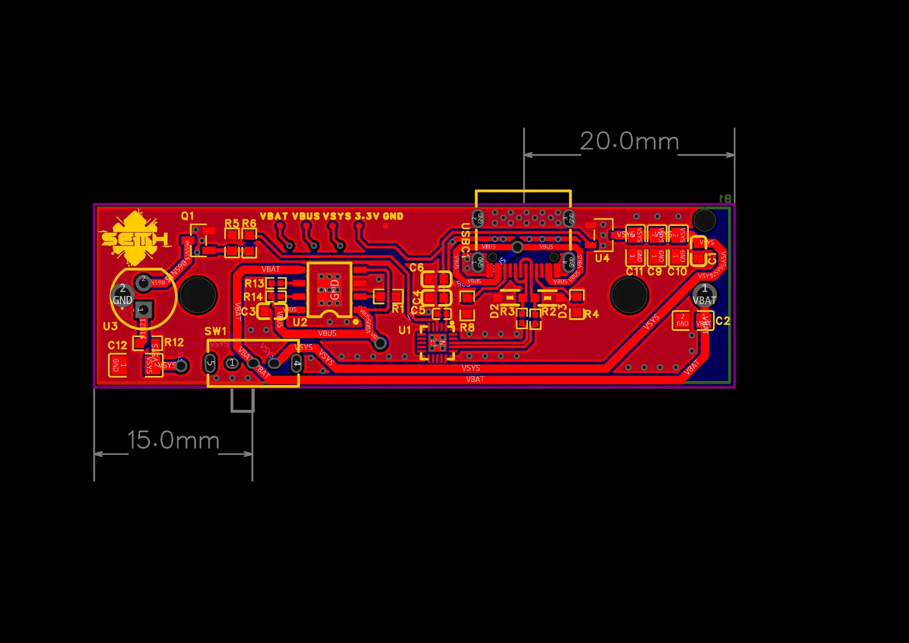
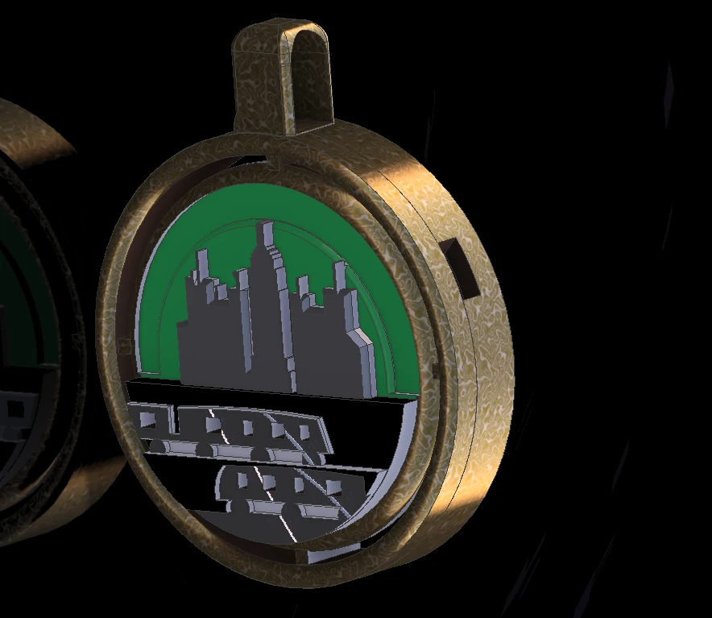
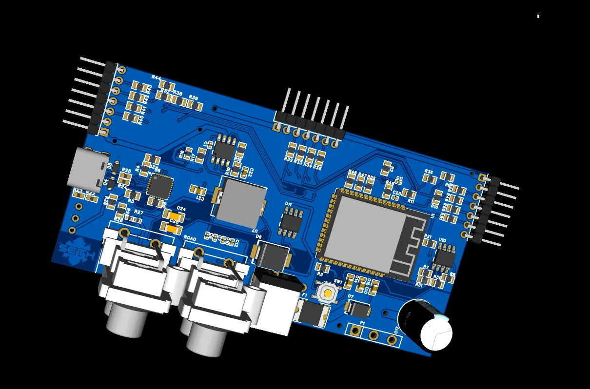
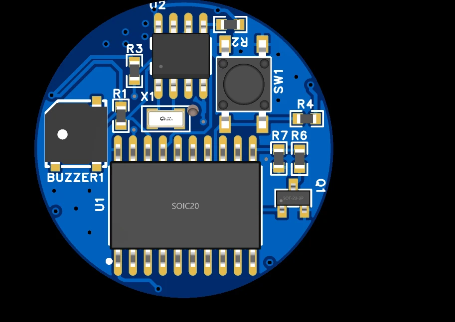

Fabricated & hand-assembled
The build, circuit and layout Offinator.
A compact infrared electronics board. I designed the schematic and PCB, had the boards fabricated and soldered the assemblies myself.

PCB LAYOUT / 2026Engineering portfolio / Florida
I'm Seth. I work on PCBs, embedded electronics and the CAD that turns circuits into physical products. Some projects have made it to the workbench; others are still in design. This is both.

A mix of fabricated hardware and designs in progress. The status of each one is listed plainly.
A compact infrared electronics board. I designed the schematic and PCB, had the boards fabricated and soldered the assemblies myself.

PCB LAYOUT / 2026
A microcontroller-based handheld concept with external flash, USB-C, boot/debug controls and supporting power circuitry.
See the schematic ↗
A necklace designed around a custom PCB carrying LEDs. The board and enclosure were developed as one compact wearable concept.
View the design ↗Selected PCB renders and layout studies. Shown as design work, not as manufactured products.


Electronics only becomes a product when the circuit, board layout, mechanical constraints and manufacturing process agree with each other.
Power paths, interfaces, components and protection circuits. Getting the electrical architecture down before routing.
Placement, routing, connectors, board outlines and the practical constraints that shape a compact PCB.
Fabrication handoff and solder assembly. The Offinator is the project here that has reached this stage.
Enclosures and components designed together, like the LED PCB fitted into the NYC necklace pendant.
I'm a Florida high-school student who's been working with PCB design for close to three years. Most of my electronics design is done in EasyEDA Pro. I like compact hardware, practical constraints and projects that eventually exist outside a computer screen.
I document both assembled boards and design-stage work, so it's clear what exists today and what's still being developed.
I'm interested in learning from working hardware teams and contributing to well-defined PCB, prototyping or junior engineering projects where appropriate.
If you've got a project, an engineering question or an opportunity to collaborate, take a look through the work and get in touch.